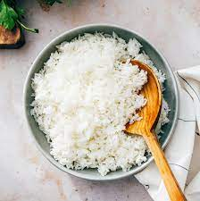

Pancakes recipe

Description
Im lazy and only adding one of these!
Ingridents
- get some rice
- some water
- cups
- other stuff im not looking up
Steps
- Boil some water to add the rice too. Once added let the rice
cook till its done. Add the tomatoes and onions to a pan on
low heat till they cook. PLEASE DONT TRY THIS I DONT KNOW
HOW TO COOK!
- Add the rest of the stuff in and call it day. This is not how
you cook rice so just order takeout!